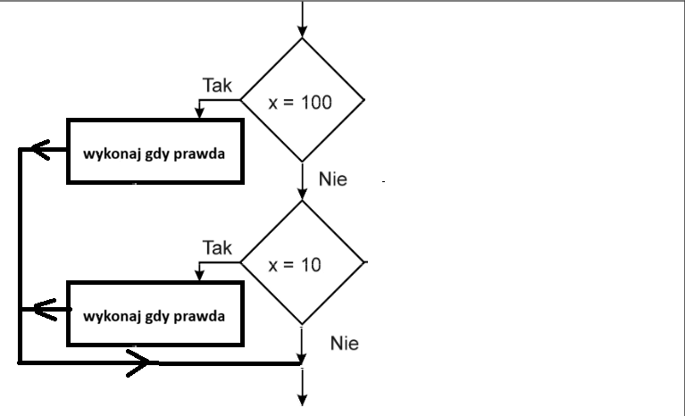
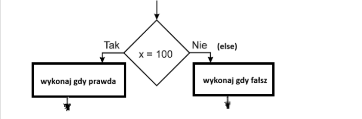

1) Instrukcja wyboru -> składania teoretyczna
if (warunek_logiczny1) { // instrukcje jeśli warunek_logiczny1 prawdziwy } if (warunek_logiczny2) { // instrukcje jeśli warunek_logiczny2 prawdziwy }
2) Instrukcja wyboru -> schemat blokowy

3) Instrukcja alternatywy -> składania teoretyczna
if (warunek_logiczny){ // instrukcje jeśli warunek_logiczny prawdziwy } else { // instrukcje jeśli warunek_logiczny fałszywy }
4) Instrukcja alternatywy -> schemat blokowy

5) Operatory porównania
== jest równe 2==3 wynik -> fałsz != nie jest równe 2!=3 wynik -> prawda > jest większe 25>3 wynik -> prawda < jest mniejsze 2<3 wynik -> prawda >= większe lub równe 25>=3 wynik -> prawda <= mniejsze lub równe 2<=3 wynik -> prawda
6) Uwaga do operatorów porównania
Należy odróżnić == ( dwa razy ) od = (jeden raz)
== ( dwa razy ) -> instrukcja PORÓWNANIA
= (jeden raz) -> instrukcja PRZYPISANIA np. a=5;
7) Operatory logiczne
&& i x=3 y=4 (x < 9 && y > 2) wynik->prawda || lub x=3 y=4 (x==8 || y==6) wynik->fałsz ! zaprzeczenie x=3 y=4 !(x==y) wynik->prawda